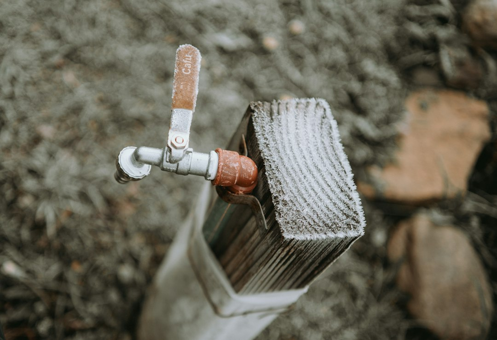

Plan the job around scope first. The guide gives 2026 installed ranges of $600-$3,100 for standard tank replacement, $1,400-$5,600 for tankless installation and $3,200-$4,700 for professional heat pump installation. The practical quote question is whether the work is a like-for-like replacement, a conversion, a repair boundary issue or a fit check involving venting, gas, electrical, access, disposal, permit or inspection assumptions.
For homeowners comparing water heater installation plumbers, the useful starting point is a scoped brief that separates heater type, location, symptoms, timing and local permit questions before price.
Water Heater Installation Plumbers Explained
Plumber for Water Heater Installation frames the first decision as a scope question: standard tank replacement, tankless conversion, heat pump fit, emergency replacement, or a repair that may not need a full new unit. The same household symptom can lead to different quote lines once fuel, access, venting and local checks are identified.
A like-for-like tank job is the cleanest comparison point when the broad heater type, fuel and location stay the same. A conversion is different. Moving from a tank to tankless, changing to a heat pump unit, or shifting building services can add work beyond the appliance itself. The brief asks for state, ZIP, heater type, symptoms and timing so the installer conversation begins with details that alter scope.
- Identify whether the existing unit is gas, electric, tankless or heat pump.
- Note where it is installed, such as garage, basement, closet or utility room.
- Describe the symptom that triggered the call, including leaking, urgency or access issues.
- Ask whether the installer sees the job as repair, replacement or conversion.
Quote Lines To Separate
A useful estimate is not just a heater price. Ask the plumber to separate the heater, labour, permit assumption, disposal and any venting, gas, electrical or access work. Competing estimates become easier to read when each installer responds to the same scope instead of guessing what replacement means at the property.
The cost bands are planning ranges, not promises. HomeGuide's 2026 figures put standard tank replacement at $600-$3,100 and tankless installation at $1,400-$5,600. Angi's 2026 guide lists $3,200-$4,700 for professional heat pump installation. Match the range to the job path first, because a tankless quote that includes venting, gas or electrical changes is not directly comparable with a simple tank swap.
For wider background on the installation topic, this water heater installation guide can sit beside the quote brief while you prepare questions.
Permit Checks Before Install Day
Ask the permit question early. Oregon is used in the guide as an example of water heater replacement appearing as permit-required plumbing work, while the local city or county answer still controls the job. A national cost band can help with planning, but it cannot confirm the inspection rule for a specific address.
Ask who checks the permit requirement, who lodges any paperwork, and who schedules inspection if one is needed. If that answer is vague, the quoted total may be missing a practical step. Keep the question narrow: what rule applies at this address, who verifies it, and where does that responsibility appear in the quote?
Who This Applies To
This guide is for homeowners who already know a water heater conversation is coming, but have not yet separated the installation path. It is also useful when a household is unsure whether the problem belongs in repair, replacement or conversion territory.
- Standard replacement: the current heater type, fuel and location are broadly staying the same.
- Tankless installation: the quote may need to identify venting, gas or electrical changes.
- Heat pump fit: the installer should check whether the unit suits the space and project constraints.
- Urgent replacement: the brief should state symptoms and timing so the call does not sound like a routine upgrade.
- Uncertain repair boundary: the homeowner should ask whether repair is realistic before accepting a full replacement assumption.
Questions Before Booking
Prepare a short script before calling. Say what you have, where it sits, what is happening and what you want clarified. The example brief asks whether the job is like-for-like replacement, repair or conversion, then asks for the price to separate appliance, labour, permit assumption, disposal, venting, gas, electrical and access work.
Incentives need the same discipline. The guide notes that IRS material reviewed for the build documented a federal heat pump credit through December 31, 2025, so any 2026 claim needs current proof before it is built into a payback calculation. For rebates, credits and local programmes, ask for the live rule rather than relying on a remembered one.
- Describe the existing setup. State whether the current unit is gas, electric, tankless or heat pump and where it is installed.
- Name the job path. Ask whether the installer treats the work as repair, like-for-like replacement or conversion.
- Separate quote lines. Request heater, labour, disposal, permit assumption and any venting, gas, electrical or access work as separate items.
- Verify local requirements. Ask who checks permits and inspections for the address before you rely on a quoted total.
| Path | Use this framing when | Quote items to check |
|---|---|---|
| Standard tank replacement | The heater type, fuel and location broadly stay the same | Heater, labour, disposal, permit assumption and access |
| Tankless installation | The project may involve a different heater setup | Venting, gas, electrical, permit and installation scope |
| Heat pump installation | The recommendation depends on space and fit | Fit check, professional install range and any current incentive proof |
Common questions
What is the main cost difference to check first? Confirm whether the job is standard tank replacement, tankless installation or heat pump installation. The stated ranges are $600-$3,100, $1,400-$5,600 and $3,200-$4,700 respectively, so the category changes the comparison.
Should permit costs be assumed in a quote? No. Ask who checks the local requirement, who handles paperwork and who schedules inspection if one is needed. Oregon is given as an example where replacement can be permit-required, but local rules control the answer.
When is tankless not comparable with a tank swap? When the tankless job includes venting, gas or electrical changes, it is a broader installation scope. Compare it as a conversion rather than against a simple replacement band.
Can a heat pump incentive be assumed for 2026? The guide says the IRS material reviewed documented the federal credit through December 31, 2025. Any 2026 incentive claim should be verified with current programme evidence before relying on it.
This guide covers quote scope, job-path comparison, permit questions and fit checks for planned heater installation conversations.